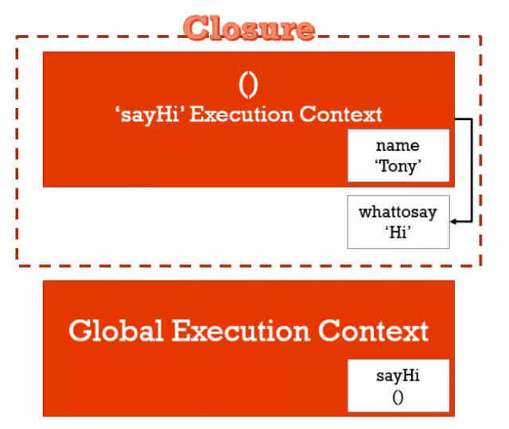
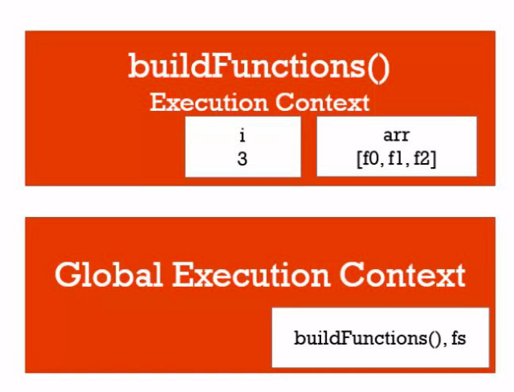
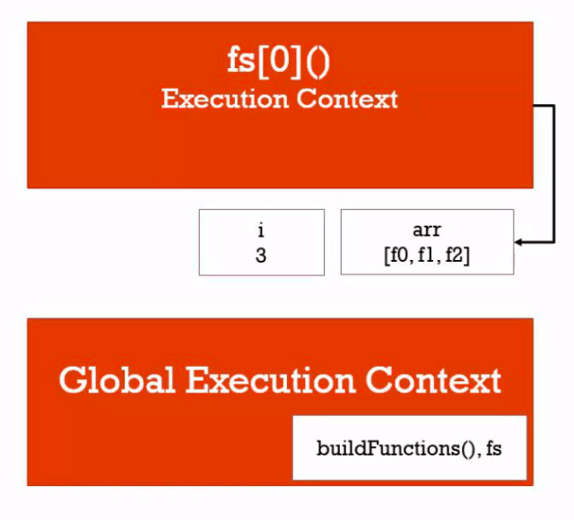
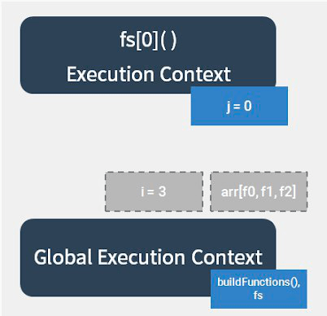
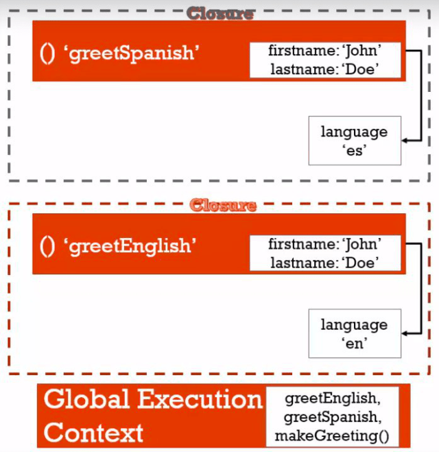

【課程紀錄】克服 JS 奇怪的地方- 閉包與 IIFEs
Closure (閉包)
1 | function greet(whattosay) { |
執行環境 greet 移除後，記憶體內的變數 whattosay 還會暫存，新的執行環境 sayHi 找不到 whattosay 就會往上一層找，這個包住所有可以取用的變數的現象，稱為 閉包

1 | function buildFunctions() { |

1 | fs[0] |
存在 fs 裡面的 function i 並沒有帶入 0,1,2，所以當呼叫到 function 時，會找到現有的 i

console.log() 不是在他所在的地方執行，而是當我們呼叫函數才執行
如果要讓輸出結果為 0,1,2 ，可以用下面兩個方法

使用 Let
1 | function buildFunctions() { |
透過let，可以讓每次跑的迴圈都建立到一個新的記憶體位置，因此最後指稱到的地方會是不一樣的，於是可以輸出0, 1, 2的結果。
使用 IIFEs
1 | function buildFunctions() { |
執行 buildFunctions 的時候，陣列裡面的匿名函式 function(j){…} 會直接被執行，創造新的執行環境，並且帶入變數 i ，所以每次迴圈都是新的執行環境，變數 j 會被存在不同的執行環境中，在呼叫 fs[0]() 的時候，也可以找到該執行環境中的變數 j
用法
1 | function makeGreeting(language) { |

CALLBACK FUNCTION (回呼函數)
a function you give to another function, to be run when the other function is finished
我呼叫函數 a ，然後給他函數 b ，當 a 結束，他呼叫函數 b
1 | function tellMeWhenDone(callback) { |
- Post title：【課程紀錄】克服 JS 奇怪的地方- 閉包與 IIFEs
- Post author：Neil Yang
- Create time：2019-06-23 00:00:00
- Post link：https://des86532.github.io/2019/06/23/Javascript/Closure-and-IIFEs/
- Copyright Notice：All articles in this blog are licensed under BY-NC-SA unless stating additionally.